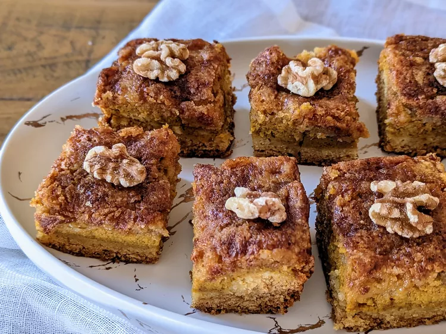

Pumpkin Crumb Cake Recipe

This pumpkin crumb cake is three layers of deliciousness! With a cakey crust, a smooth pumpkin custard filling, and a buttery walnut topping, it's sure to be a favorite with your family around the Thanksgiving holiday or anytime the mood for pumpkin strikes. This recipe was given to me by a friend and has always been a hit with my children and family.
Ingridients
- Cake mix: This easy recipe starts with boxed yellow cake mix, which you'll use in the first and third layers.
- Eggs: You'll need one egg for the crust and three eggs for the pumpkin layer.
- Butter: There's butter in the crust and the topping.
- Pumpkin puree: Use store-bought or homemade pumpkin puree.
- Sugar: The pumpkin layer is sweetened with white sugar and brown sugar.
- Cinnamon: Ground cinnamon adds warm and cozy flavor.
- Walnuts: The walnuts in the topping are optional, but they add pleasant crunch.
Steps
- Step 1: Preheat the oven to 350 degrees F (175 degrees C). Grease a 9x13-inch baking pan.
- Step 2: Make crust: Measure 1 cup cake mix into a medium bowl; set aside for topping. Combine remaining cake mix, melted butter, and egg in a large bowl; mix until well combined. Pat mixture into the bottom of the prepared pan.
- Step 3: Make pumpkin layer: Mix pumpkin puree, white sugar, brown sugar, eggs, and cinnamon in a large bowl until well combined. Pour over crust.
- Step 4: Make topping: Add sugar and softened butter to the reserved cake mix and stir until crumbly. Sprinkle topping over pumpkin layer, then scatter walnuts over top.
- Step 5: Bake in the preheated oven until a toothpick inserted in the center comes out clean, 40 to 45 minutes.